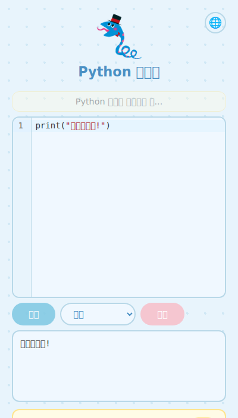
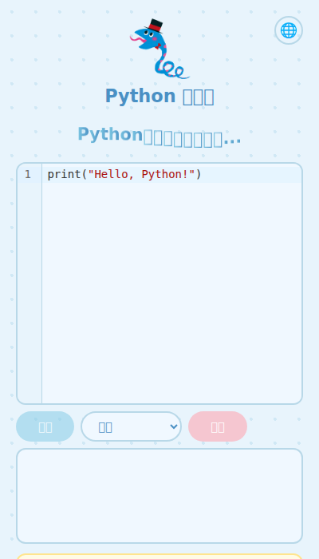
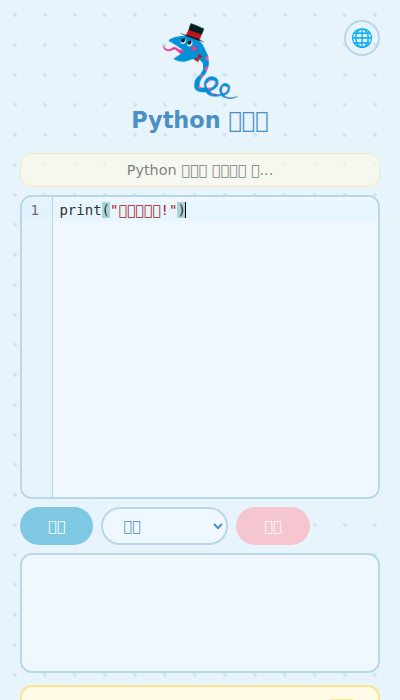

Scratch에서 블록을 모아 프로그램을 만들 수 있게 됐어. 대단해!
텍스트로 프로그램을 쓰고 싶다면, 다음 단계는 Python이야.
Python 연습장에서는 Scratch의 "반복"과 "만약" 블록을 Python으로 쓸 수 있어.
앱의 "예제"에 Scratch 블록과 같은 일을 하는 Python 코드가 있어.
예제 보기브라우저에서 바로 Python을 실행!
어린이를 위한 프로그래밍 연습장
설치 필요 없음. 한국어 오류 메시지. 아이들도 쉽게.
지금 해보기

브라우저만 열면 돼요. Chromebook과 태블릿에서도 돼요.
버튼과 메뉴가 한국어예요. 어린이도 쉽게 쓸 수 있어요.
영어 오류를 아이들이 이해할 수 있는 말로 바꿔줘요. 고치는 방법도 알려줘요.
자동 저장. 브라우저를 닫아도 코드가 그대로 있어요.
영어 오류 메시지를 아이들이 이해할 수 있는 한국어로 바꿔줘요. 고치는 방법도 알려줘요.
SyntaxError: '(' was never closed
괄호 ( 가 닫히지 않았어. ) 를 넣어줘
NameError: name 'hensuu' is not defined
hensuu 이 뭐야? 아직 안 만들었거나 이름을 잘못 쓴 것 같아
IndentationError: expected an indented block
빈칸이 부족해. if 나 for 다음 줄에 빈칸 4개를 넣어줘
20가지 이상의 오류 유형을 지원해요
Scratch에서 블록을 모아 프로그램을 만들 수 있게 됐어. 대단해!
텍스트로 프로그램을 쓰고 싶다면, 다음 단계는 Python이야.
Python 연습장에서는 Scratch의 "반복"과 "만약" 블록을 Python으로 쓸 수 있어.
앱의 "예제"에 Scratch 블록과 같은 일을 하는 Python 코드가 있어.
예제 보기for i in range(5):
print("★" * i)
for eum in ["도","레","미","파","솔"]:
print(eum, "♪")
for i in [3,2,1]:
print(i)
print("발사!")

URL에 접속하기만 하면 돼요.

코드를 써요.
버튼을 누르고 결과를 봐요.
계정 필요 없음 — 완전 무료
커뮤니티에 참여하세요
Discord 참여